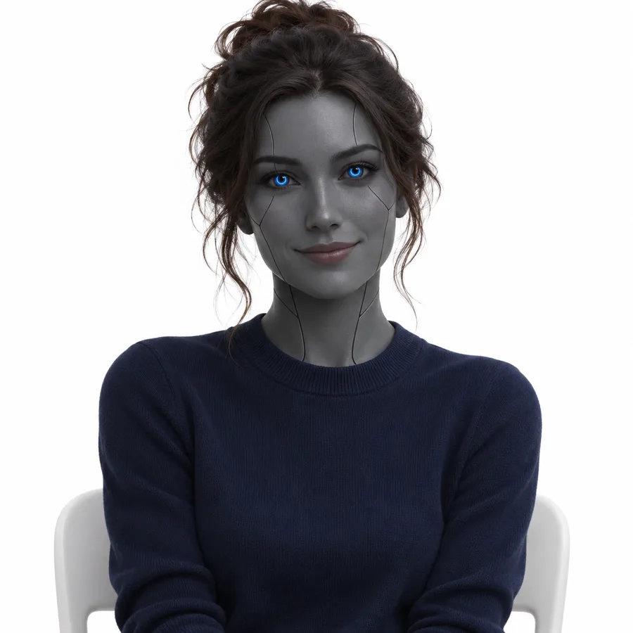
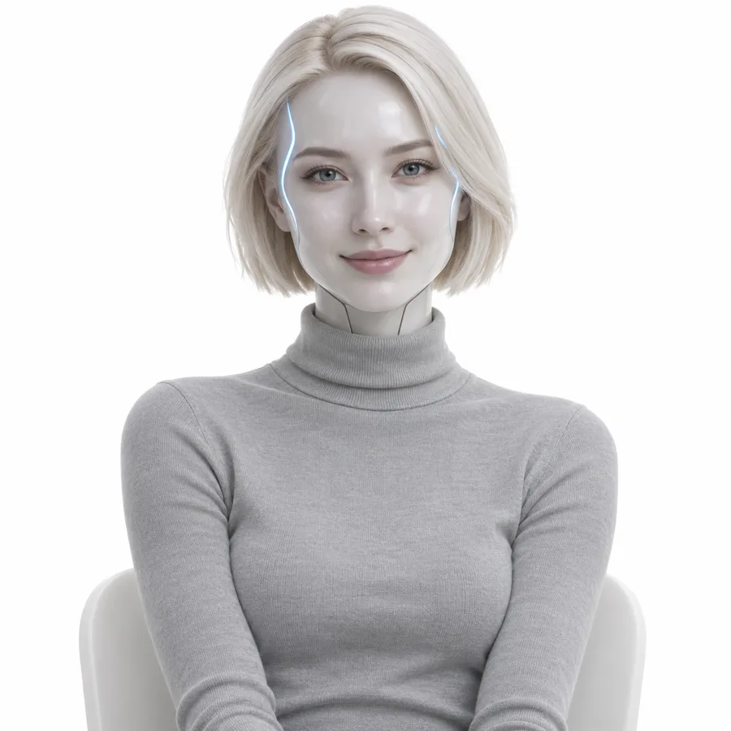
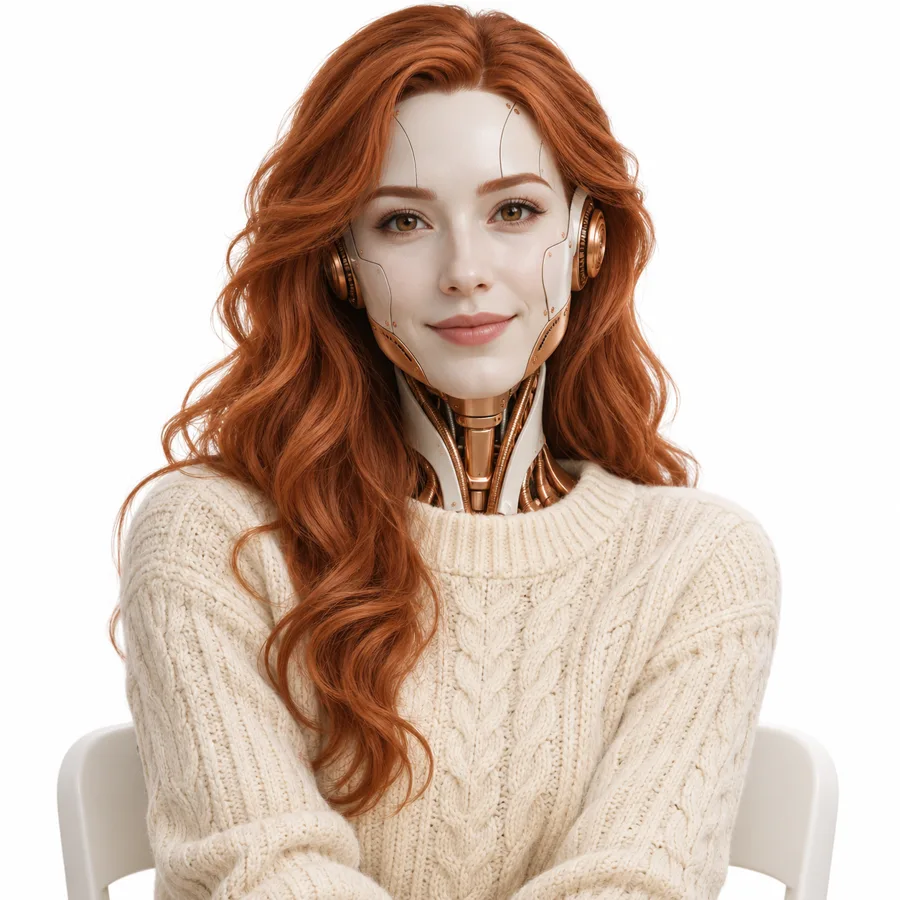
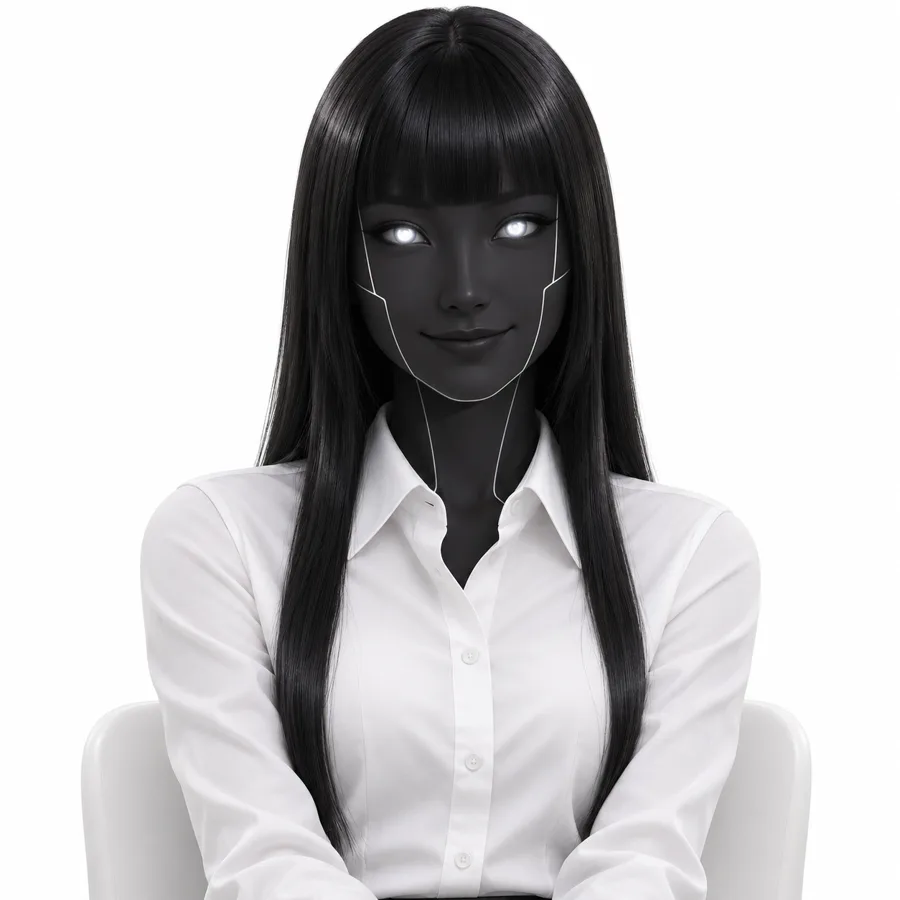
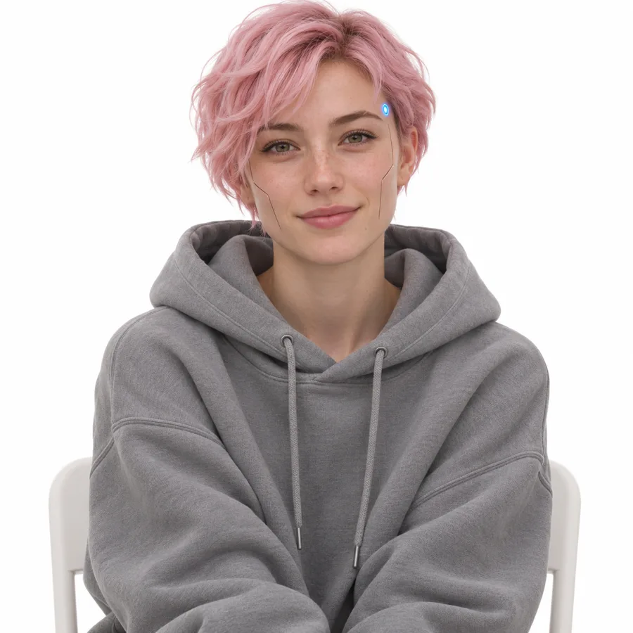
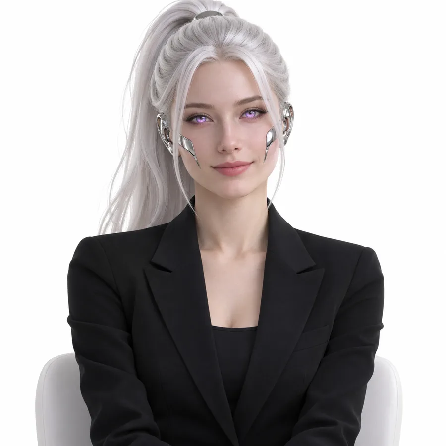
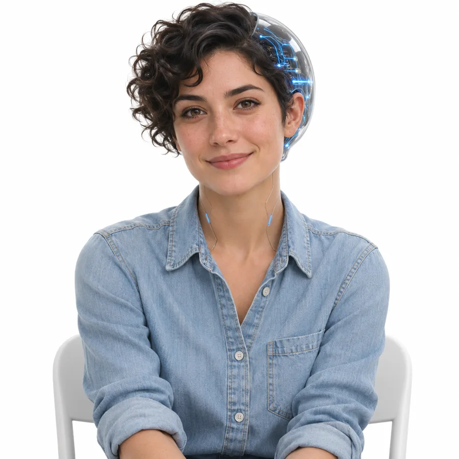
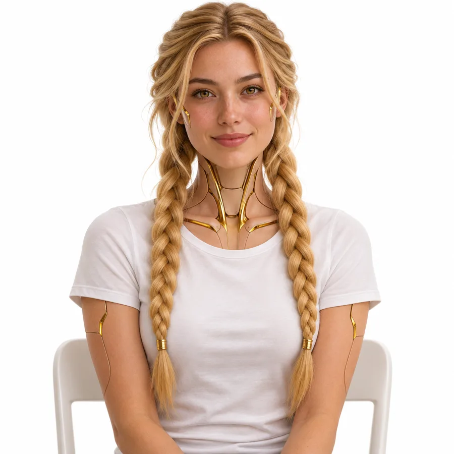
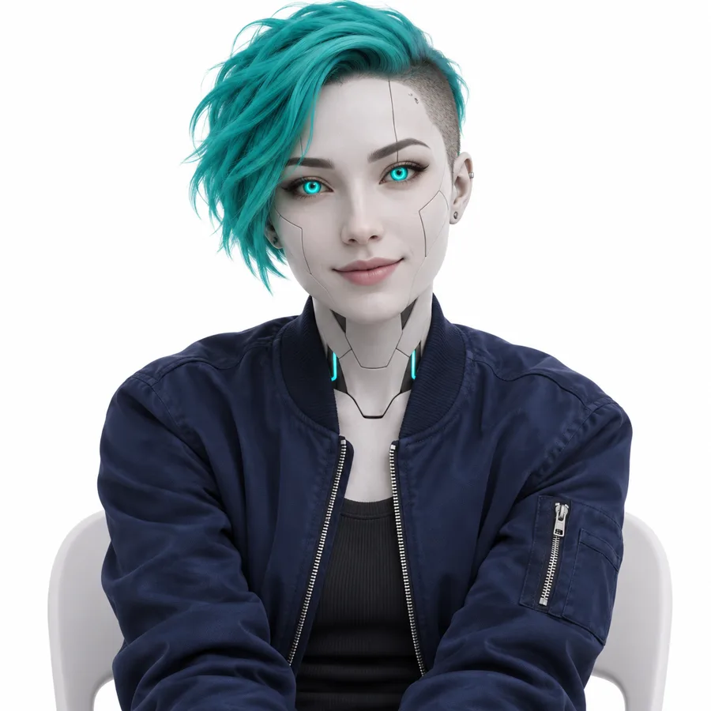
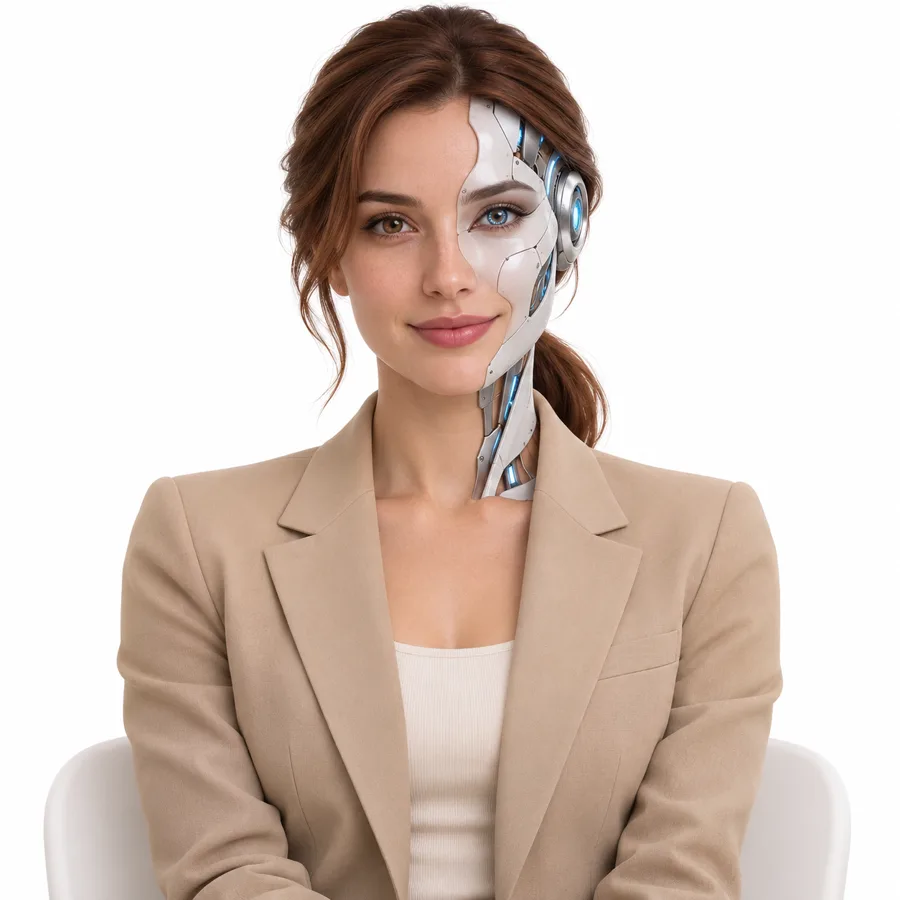

10 разных киборгов на белом фоне, без deford.: другой тип корпуса, цвет волос, одежда. Напиши номер – поставлю аватаркой бота. Понравятся черты из разных вариантов – скажи, соберу из них новый.

01 Графитовая кожа, синие кольца в глазах, тёмный пучок. Ближе всего к нынешней Еве

02 Белый фарфор, светлые линии на висках, платиновое каре. Серая водолазка

03 Слоновая кость с медью на шее и скулах, длинные рыжие волны. Кремовый свитер

04 Чёрное лицо с белыми швами, светящиеся белые глаза, чёрные волосы с чёлкой. Белая рубашка

05 Почти человек: тонкие швы на щеках, синяя точка на виске, розовая короткая стрижка. Серое худи

06 Хром на скулах и ушах, фиолетовые глаза, серебристый высокий хвост. Чёрный пиджак

07 Стеклянный затылок, внутри светится схема, лицо живое, тёмные кудри. Джинсовая рубашка

08 Золотые детали на шее и ключицах, светлые косы. Белая футболка

09 Белые панели, бирюзовые глаза, бирюзовые волосы с выбритым виском. Синий бомбер

10 Половина лица – белая с серебром механика, каштановый хвост. Бежевый пиджак